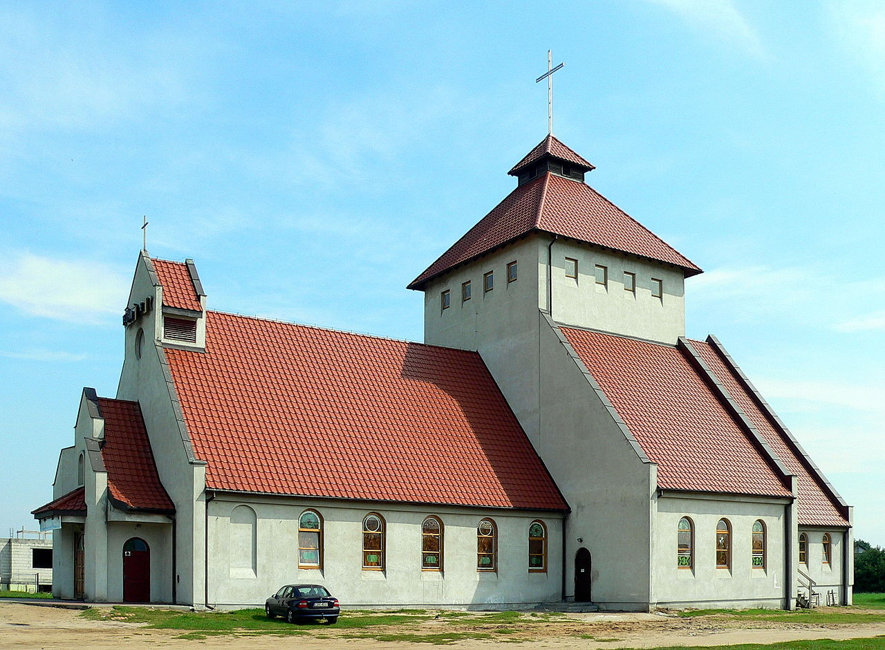
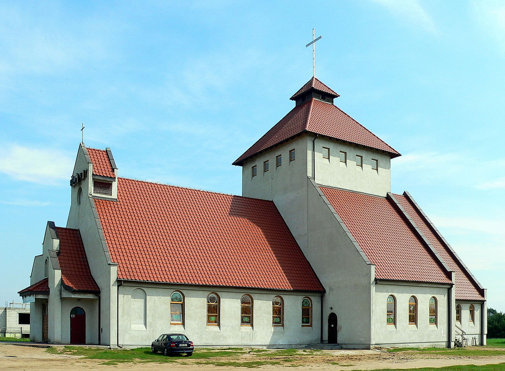
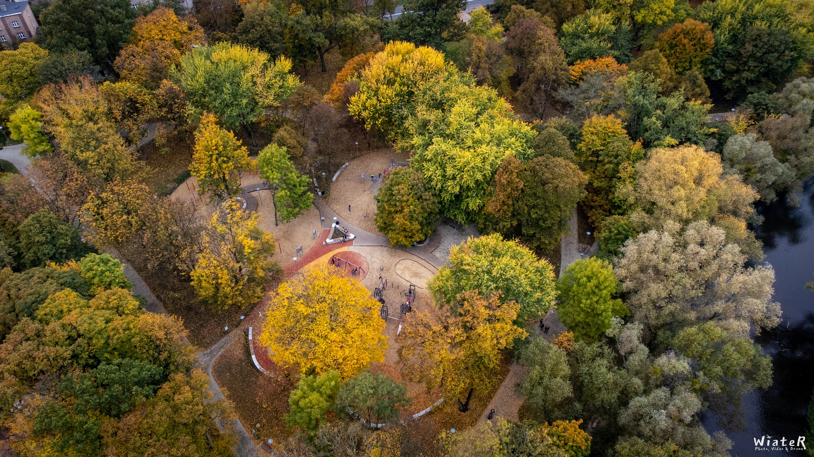
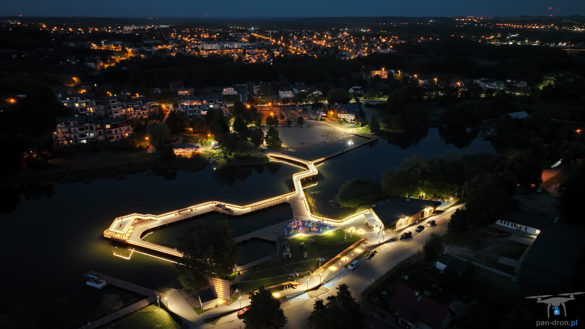
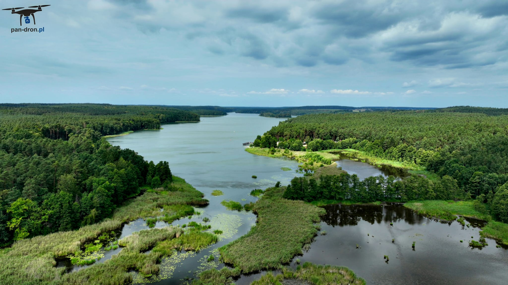
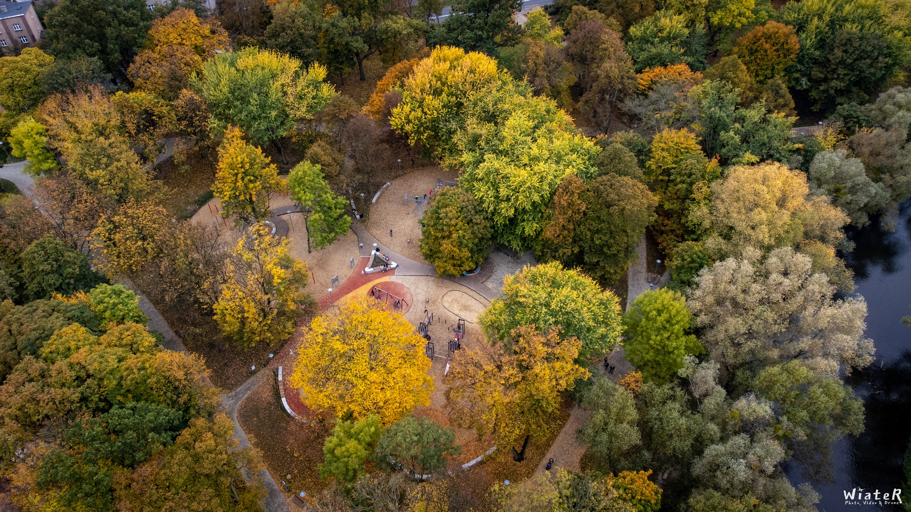
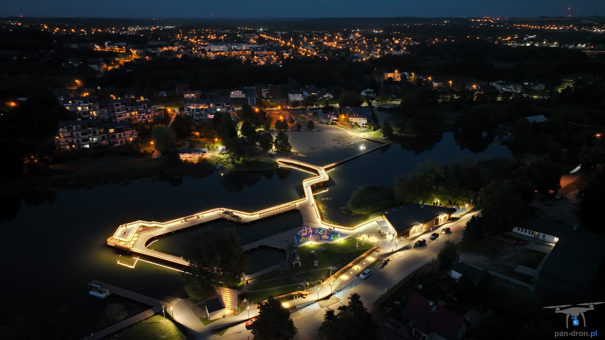
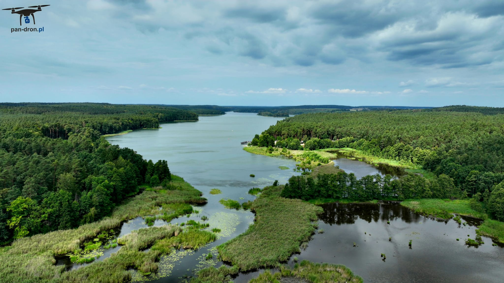

Pałac wzniesiony przed rokiem 1564 dla starosty brodnickiego z wykorzystaniem jednego z gotyckich budynków zamku w Brodnicy. W latach 1605-1625 mieszkała tu księżniczka Anna Wazówna, siostra króla polskiego Zygmunta III Wazy. W dwudziestoleciu międzywojennym w pałacu mieściło się gimnazjum handlowe, szkoła powszechna, szkoła muzyczna i inne placówki oświatowe. Podpalony przez żołnierzy radzieckich doszczętnie spłonął w styczniu 1945 r. Odbudowany w latach 1960-70 z przeznaczeniem dla Powiatowego Domu Kultury i biblioteki. Od 1986 roku, po przeniesieniu domu kultury do nowej placówki, był siedzibą Muzeum Regionalnego w Brodnicy. Obecnie pałac to siedziba Miejskiej i Powiatowej Biblioteki Publicznej im. Ignacego Łyskowskiego oraz Informacji Turystycznej.

 


 




